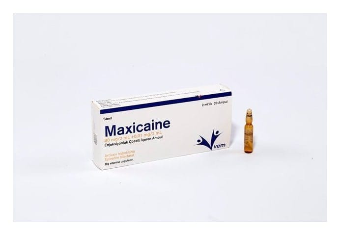

Maxicaine 80 mg/2 ml+0,01 mg/2 ml Enjeksiyonluk Çözelti İçeren Ampul

Ne için kullanılır
KT · Bölüm 1MAXİCAİNEʼnin içinde artikain hidroklorür ve epinefrin bitartarat etkin maddeleri bulunur. Ampul içinde çözeltinin 1 mlʼsinde 40 mg artikain hidroklorür ve 0,009095 mg epinefrin bitartarat vardır. Ambalajı içinde her biri 2 ml enjeksiyon çözeltisi içeren 20 ampul bulunur.
MAXİCAİNE lokal (bölgesel) anestezi (ameliyat ve tıbbi uygulamalar sırasında ağrı ve rahatsızlığı önlemek için kullanılan ve duyuyu engelleyen bir ilaç) yapan, diş hekimliğinde Bu ilacı kullanmaya başlamadan önce KULLANMA TALİMATINI dikkatlice okuyunuz, çünkü sizin için önemli bilgiler içermektedir. Bu kullanma talimatını saklayınız. Daha sonra tekrar okumaya ihtiyaç duyabilirsiniz. Eğer ilave sorularınız olursa, lütfen doktorunuza veya eczacınıza danışınız. Bu ilaç kişisel olarak size reçete edilmiştir, başkalarına vermeyiniz. Bu ilacın kullanımı sırasında doktora veya hastaneye gittiğinizde bu ilacı kullandığınızı doktorunuza söyleyiniz. Bu talimatta yazılanlara aynen uyunuz. İlaç hakkında size önerilen dozun dışında yüksek veya düşük doz kullanmayınız.
kullanılan bir ilaçtır. Epinefrin, enjeksiyon bölgesindeki kan damarlarını daraltır, bu bölgedeki kan akışını azaltır (lokal anemi) ve ayrıca lokal anestezinin etkisini uzatır.
MAXİCAİNE diş tedavilerinden önce infiltrasyon ve blok anestezi için kullanılır. Bunlar: Komplikasyonsuz tek veya birden fazla basit diş çekimi, Kavitelerin çıkarılması ve kron hazırlanması gibi diş hekimliği ile ilgili rutin müdahaleleri içerir.